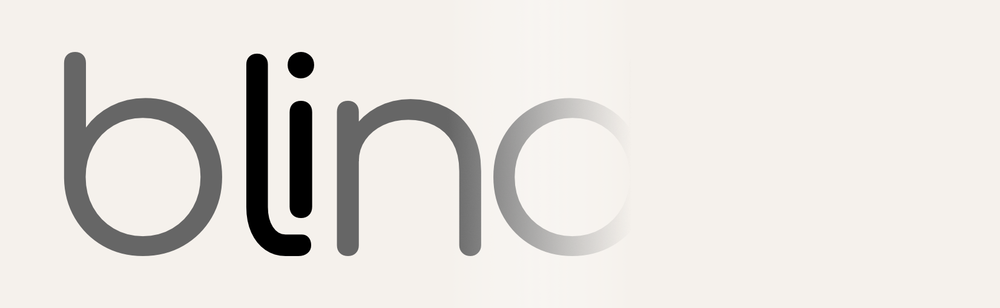
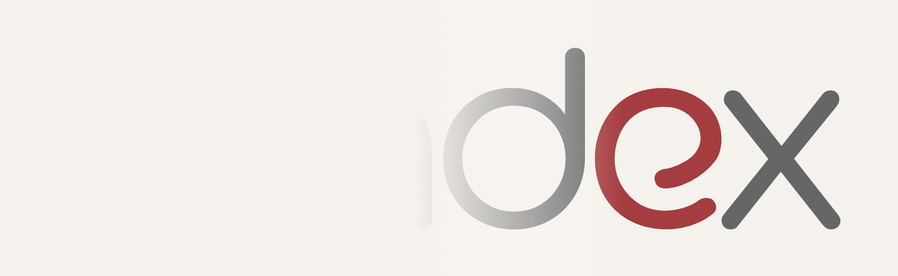
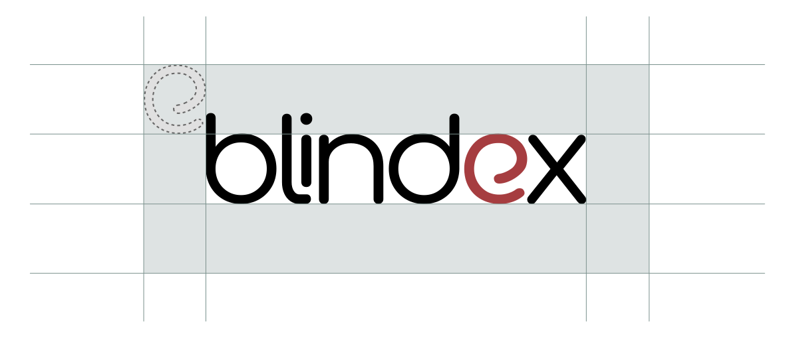
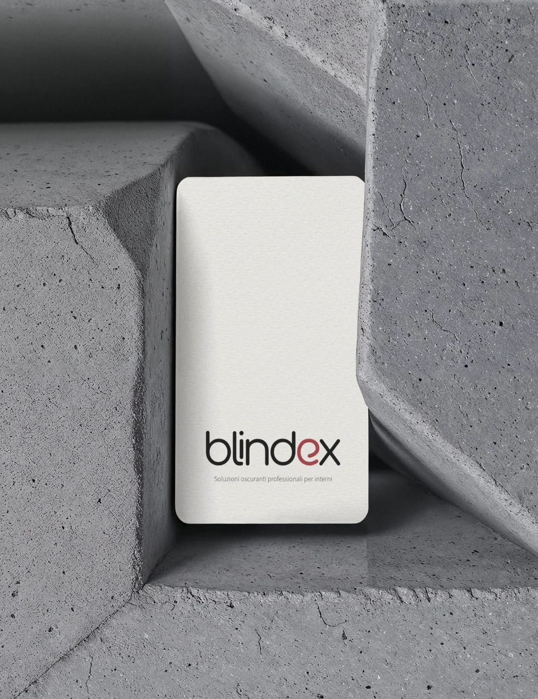
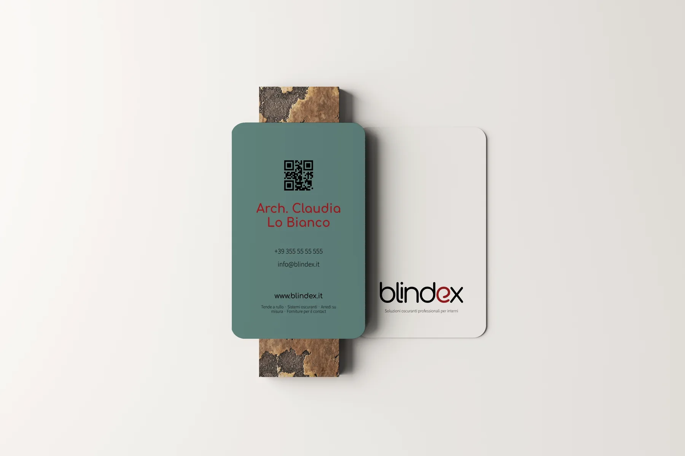

01 — Idea
Blindex makes custom roller blinds for offices, hotels, and commercial spaces — moving smoothly, quietly, always controlled. That gesture became the foundation for the logo, the tone, the palette: Dynamic Flow. The "e" carries the concept, its shape echoing the scrolling motion of a blind.


02 — Execution
Deep Black and Ardesia Red anchor the palette; Comfortaa sets the tone for titles, Source Sans Pro keeps the rest clean and unobtrusive.

TitlesComfortaa
TextSource Sans Pro
Nero Profondo
#111111
Rosso Ardesia
#A63D40
Verde Salvia
#7A918D
Grigio Fumo
#666666
Grigio Perla
#E0E0E0
Sabbia Chiara
#F5F1EC

03 — Outcome
Approved by the client — launch pending.

